SQL Basics book notes and recall questions
- Chapter 1 Database and SQL
- Chapter 2 SQL Query Basics
- Chapter 3 Aggregation and Sorting
- Chapter 4 Table Data Update
- Chapter 5 Complex Query
- Chapter 6 Colorful Functions
- Chapter 7 Set Operation
- Chapter 8 Advanced Topics: Window Function & Grouping Operator
Chapter 1 Database and SQL
Recall questions
- How to rename a table?
- How to add a new column to a table?
- What's the difference between CHAR(n) and VARCHAR(n)?
- How we categorize SQL language?
Three categories of SQL language
DDL (Data Definition Language)
- CREATE
- DROP
- ALTER
DML (Data Manipulation Language)(90%)
- SELECT
- INSERT
- UPDATE
- DELETE
DCL (Data Control Language)
- COMMIT
- ROLLBACK
- GRANT
- REVOKE
Data type
CHAR(n)
- the length is determined by n
- e.g., when insert 'abc' into CHAR(8), there will be 5 half-angle space stored after 'abc'
VARCHAR(n)
- the length is variable
- e.g., when insert 'abc' into VARCHAR(8), there will only be 'abc' stored
Set constraints
NOT NULL
- if there is no input, error raises
PRIMARY KEY(product_id)
- use primary key to select distinct rows
Table definition update
Add Column
- ALTER TABLE < table name > ADD COLUMN < column definition >;
Rename Table
- ALTER TABLE Poduct RENAME TO Product;
Chapter 2 SQL Query Basics
Recall questions
- Why we set NOT NULL constraints?
- What tools we can use to deal with complex situations to calculate logic values?
- How many logic values are there?
Query constant
example：
SELECT '商品' AS string, 38 AS number, '2009-02-24' AS date,
product_id, product_name
FROM Product;
Remove duplicates
Use DISTINCT
- NULL will be kept, treated as another category of data
- Rows with multiple NULLs will be combined into one row
Arithmetic and comparison operators
Arithmetic NULL (attention!)
- NULL / 0 = NULL
- NULL + 5 = NULL
- all arithmetic involve NULL, the result will always be NULL
Comparison NULL
- NULL <> 2800 (UNKNOWN, this is neither TRUE nor FALSE)
- TURE, FALSE, UNKNOWN
logic operators (AND, OR, NOT)
Use Venn Digram and Truth Tables to deal with complex situations
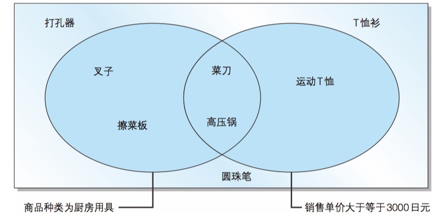

AND(logic product), OR(logic sum)
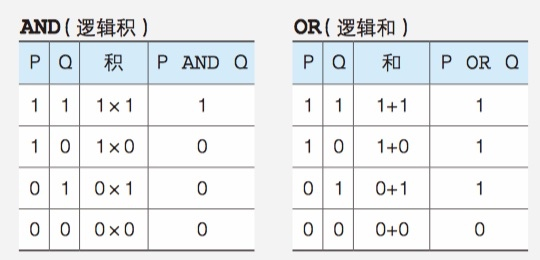
Why set constraint NOT NULL
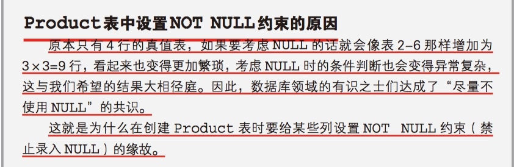
Chapter 3 Aggregation and Sorting
Recall questions
- What is the execution sequence of SQL?
- Can you use (alias, numbers, aggregations not in select) in ORDER BY clause?
- Which aggregation functions apply to all data type?
- How to count all the non-null rows?
Aggregation functions
Aggregation means multiple rows input, one row output.
COUNT(parameter)
- COUNT(*) will include NULL rows, normally, other functions will only aggregate non-null values
- COUNT(purchase_price) will exclude NULL rows
- COUNT(DISTINCT parameter) to calculate the number of categories of the value.
MAX/MIN & SUM/AVG
- MAX/MIN apply to all data type
- SUM/AVG apply to numeric data type
- DISTINCT can be used in all aggregation functions, help to remove duplicated data
Group By
- Different groups of data
- Each group has one aggregation output
- If NULL is included in aggregation key, it will still show the result

Caveats
- Sequence of execution:
FROM -> WHERE(set row condition) -> GROUP BY(set group condition) -> HAVING -> SELECT -> ORDER BY
- You can only use aggregation in SELECT, HAVING, ORDER BY, not WHERE
- ORDER BY goes to the bottom and you can use alias (do not use numbers), because before you sort, the final table is ready.
Chapter 4 Table Data Update
Recall questions
- How to update one column's data to NULL?
- How to delete rows met certain conditions?
- How to insert data from another table?
INSERT

INSERT ... SELECT
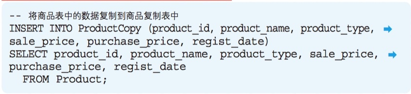
DELETE (rows)
- DELETE FROM < table name >; (keep table, delete all rows; use TRUNCATE < table name > is better.)
- DELETE FROM < table name > WHERE < conditions >; (delete certain rows)
UPDATE
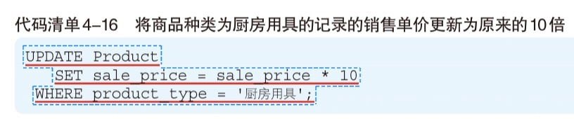
Use NULL to update
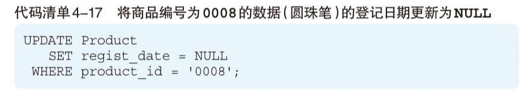
Transaction
- Atomicity
- Consistency
- Isolation
- Durability
Chapter 5 Complex Query
Recall questions
- When to use correlated subquery?
- When to use scalar subquery?
- When to create a View?
- What is the difference between View and Table?
View and View creation
- View stores
Select clause, not data - Should make often-use
Select clauseto View - Subquery is one-time View

Scalar subquery
- Return a single value
- combine with comparison operators
- Can be used anywhere you want to use constant or column name
A powerful example (Scalar subquery)
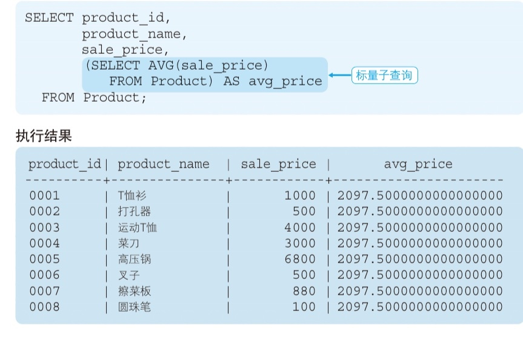
Correlated Query
When comparing within a subdivided group, you need to use a correlated subquery.
right:
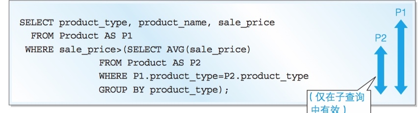
wrong:
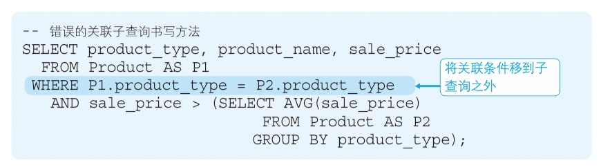
Chapter 6 Colorful Functions
Recall questions
- How can you use CASE to transpose row and column?
- What are Predicates?
- How many categories of functions are there?
Categories of Functions
- Arithmetic ~
- ABS()
- MOD(n, p)
- String ~
- REPLACE(object, string_be_replaced, string_to_replace)
- SUBSTRING(object, FROM start_position FOR num_string_to_slice)
- Date ~
- CURRENT_DATE
- CURRENT_TIME
- CURRENT_TIMESTMAP
- EXTRACT(element FROM date)
- Convert ~
- CAST(object AS data_type)
- COALESCE(data1, data2, data3, ...)
- Return first non-NULL value starting from the left
- Aggregation ~ (only five)
NB! Almost all functions return NULL when input parameter is NULL.
Predicates (which returns boolean-like values)
- LIKE
- BETWEEN
- IS NULL, IS NOT NULL
- IN
- EXISTS
- Often EXISTS'S parameter is correlated subquery
NB!
- In most cases, NULL rows won't be selected when using predicates
- Don't include NULL in NOT IN's parameter, otherwise there won't show any results
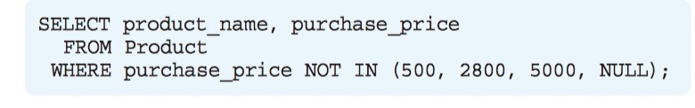
Use Case to transpose
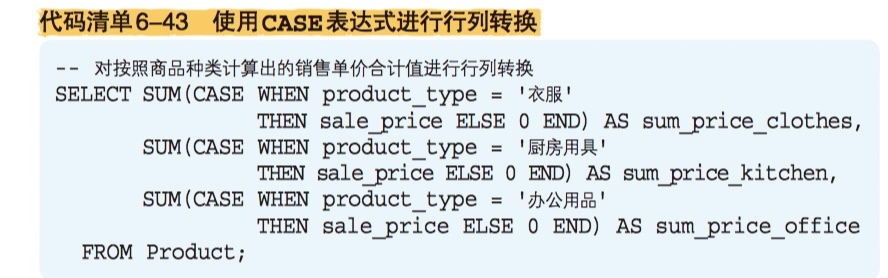
Chapter 7 Set Operation
Recall questions

Row direction join (axis = 1)
- UNION
- INTERSECT (same grammar with UNION)
- UNION ALL
- INTERSECT ALL
- EXCEPT
Column direction join (axis = 0)
- INNER JOIN
- LEFT/RIGHT OUT JOIN
- CROSS JOIN
Chapter 8 Advanced Topics: Window Function & Grouping Operator
Recall questions

Window Function can only be used in SELECT clause, not in WHERE and GROUP BY because it executes on the result of WHERE or GROUP BY.
Categories of Window Function
- Aggregation function(SUM, AVG, COUNT, MAX, MIN)
- Dedicated window function(RANK, DENSE, ROW, NUMBER)
Features of Window Function
- Group data (PARTITION BY is not necessary, you can treat the whole table as a group)
- Order data
- But not aggregate data (therefore, result has no less rows)
Aggregation window function (attention!)
Current record as benchmark to calculate stats is the biggest feature of Aggregation of window function.

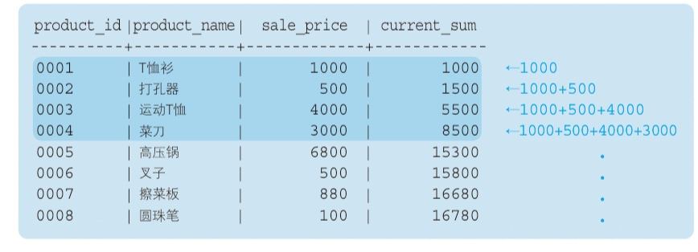

Moving average (how to use Frame)
- PRECEDING
- FOLLOWING
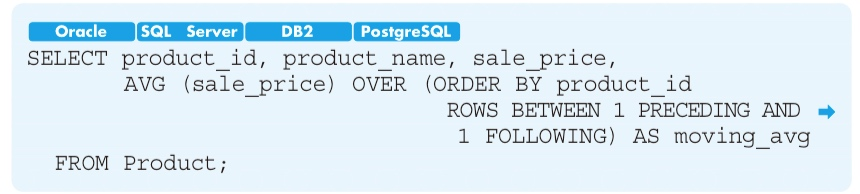
Grouping operator
ROLLUP (n+1)
- From small aggregation to large aggregation
- GROUPING Function to identify different NULLs
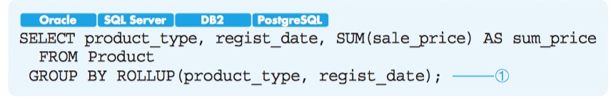

CUBE (2n)

GROUPING SETS
Copyright © 2015 Powered by MWeb, Theme used GitHub CSS.